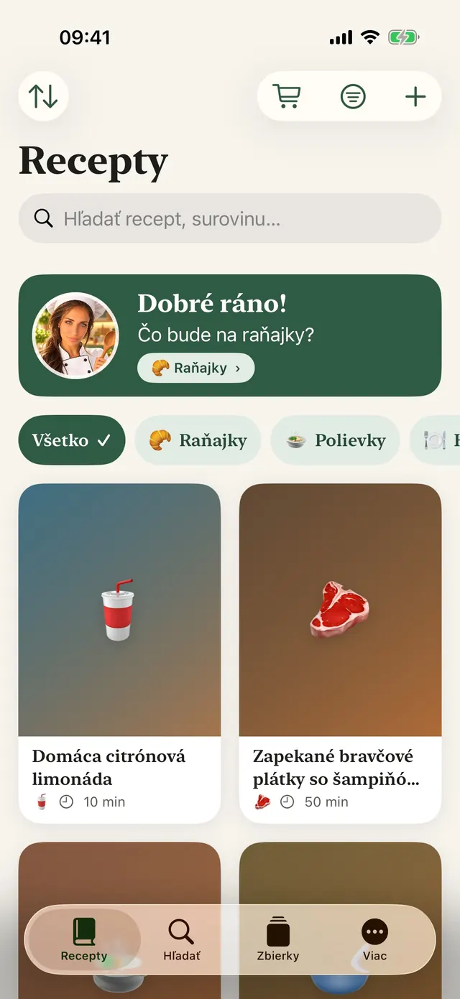
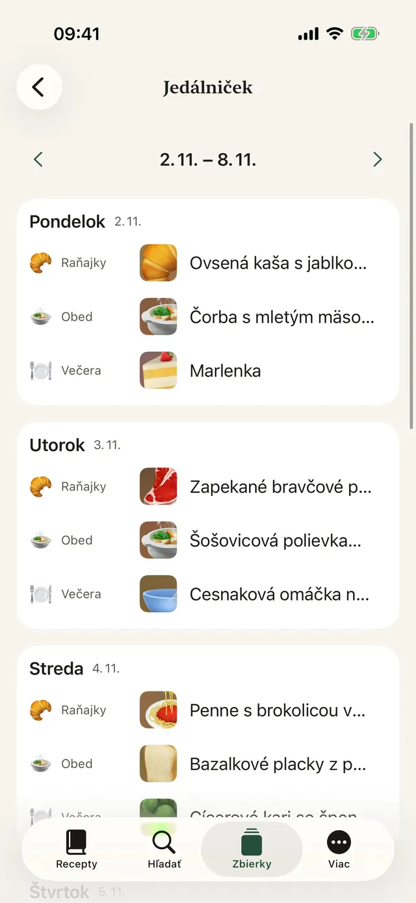
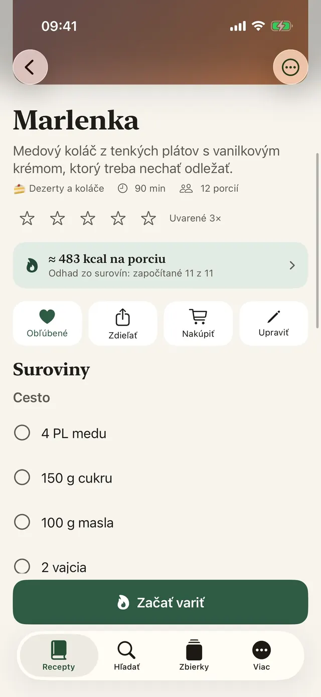
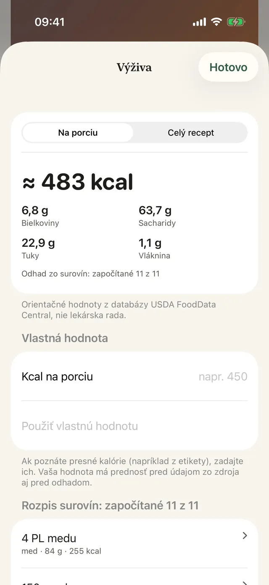
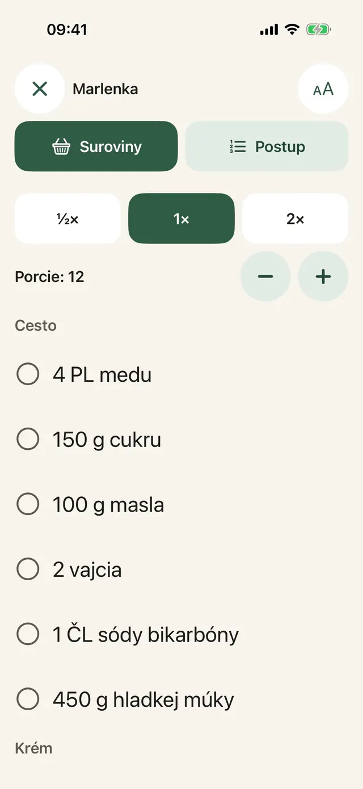
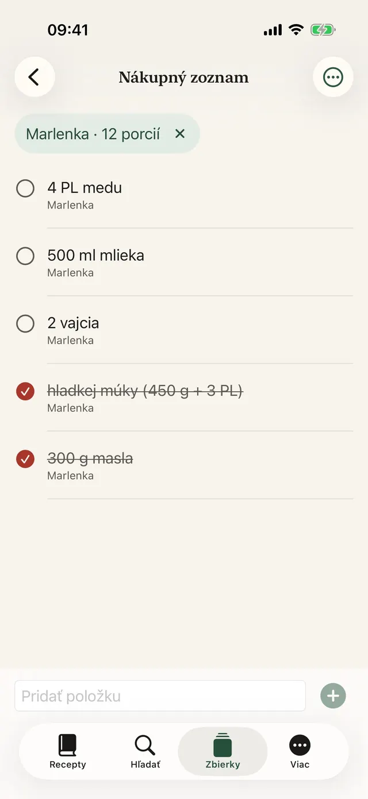
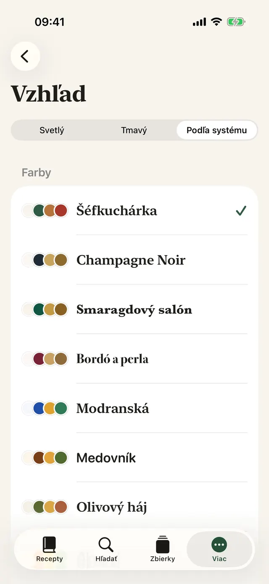
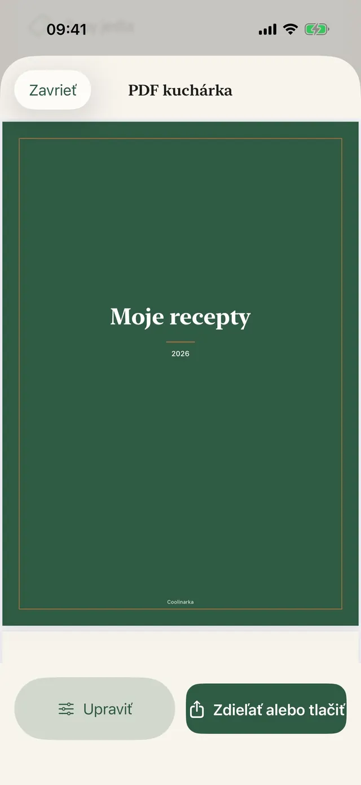
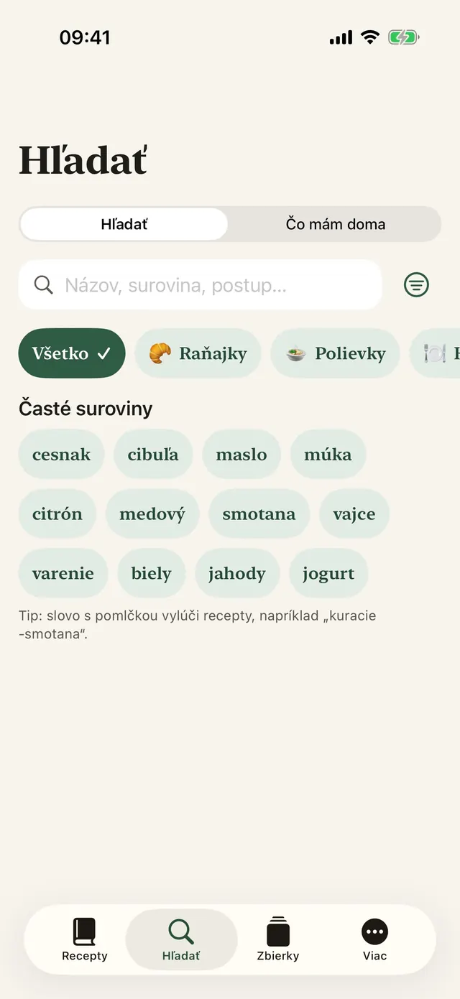
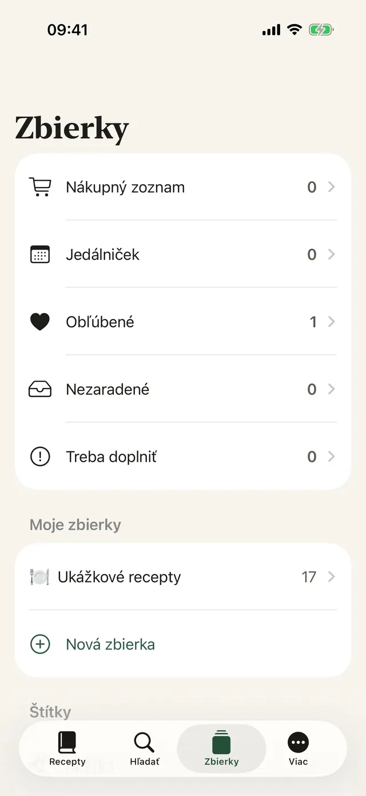

Uložíte jedným klepnutím
V Instagrame, Facebooku alebo Safari stlačte Zdieľať a vyberte Coolinarka.
Uložte si recept z Instagramu, Facebooku, webu alebo videa. Coolinarka z neho spraví prehľadné suroviny a kroky a pri varení vás prevedie krok za krokom.
Pre iPhone a iPad, zadarmo. Verzia pre Android bude čoskoro v Google Play. Dajte mi vedieť, keď vyjdePre iPhone, iPad a Android, zadarmo.


Takto vyzerá recept v príspevku na sociálnej sieti. Jedno ťuknutie a máte ho v poriadku, aj s porciami, ktoré si prepočítate.
😍😍 Penne s brokolicou v smotanovej omáčke!!! 400 g penne, 1 brokolica, 250 ml smotany na varenie, 2 strúčiky cesnaku, 50 g parmezánu, soľ a korenie ... Penne uvaríme podľa návodu, posledné 4 minúty k nim pridáme ružičky brokolice. Na oleji krátko opražíme cesnak, prilejeme smotanu a prehrejeme. Scedené cestoviny s brokolicou zmiešame s omáčkou a posypeme parmezánom. 🔥🔥 #penne #food
Jednoduché cestoviny, ktoré majú radi aj deti.
Ukážkový recept z appky. Skutočné príspevky sú často ešte chaotickejšie a Coolinarka si s nimi poradí aj zo snímky obrazovky či videa.
Veľké písmo, jeden krok na obrazovke, displej nezhasne. Časovač spustíte jedným ťuknutím, aj keď máte ruky od múky.
V ukážke beží časovač zrýchlene.
Penne uvaríme podľa návodu, posledné 4 minúty k nim pridáme ružičky brokolice.
Suroviny z viacerých receptov sa sčítajú. Zmeňte krajinu a sledujte, ako sa hľadané slovo preloží do jazyka obchodu, aj keď je recept v inom jazyku.
Do košíka položku pridáte v obchode. Appka k vášmu účtu v obchode nemá prístup. Dostupnosť závisí od vašej adresy.
Poľka na Slovensku, Slovák v Prahe, Talian v Bratislave. V cudzom obchode stačí malý omyl. Coolinarka hľadá v jazyku obchodu, aby sa vám to nestalo. Viete, čo by ste si odniesli vy?
Deväť tém s vlastnou ikonou, tmavý režim a väčšie písmo. Vyberte si a zmení sa celá táto stránka, presne ako appka.
Skutočné obrazovky, v jazyku, v ktorom čítate túto stránku.









V Instagrame, Facebooku alebo Safari stlačte Zdieľať a vyberte Coolinarka.
Z videa alebo nahrávky obrazovky vznikne recept, reč sa prepisuje priamo v telefóne.
Naplánujte celý týždeň, prázdne políčka doplníte z obľúbených a všetko pošlete do nákupného zoznamu.
Typy jedla, štítky, obľúbené a vlastné zbierky.
Podľa názvu, surovín alebo postupu, bez ohľadu na diakritiku.
Widget Čo dnes uvariť na ploche aj zamknutej obrazovke a Siri: „Čo mám uvariť v Coolinarke“.
Príjemca ho otvorí v Coolinarke aj s fotkou, vaše hodnotenia a poznámky v ňom nie sú.
Orez, otočenie a filtre.
Recepty sa synchronizujú cez iCloud medzi zariadeniami s rovnakým Apple účtom.
Zálohujte si zbierku alebo ju preneste do inej appky.
Vrátane ukážkových receptov a odhadu kalórií.
8. novembra 2026
Uložené príspevky v Instagrame nie sú kuchárka. Ako si recept z Instagramu, Facebooku alebo webu uložiť tak, aby ste ho našli podľa suroviny, mali ho aj bez internetu a varili z neho bez listovania.
Appka je bez účtu, reklám a sledovania. Recepty ostávajú vo vašom zariadení a vo vašom súkromnom iCloude, vývojár k nim nemá prístup.
Recepty, import, export, zálohy, iCloud aj režim varenia nič nestoja. Plus je jednorazový nákup bez predplatného a dá sa zdieľať v rodine.
Uvádzacia cena 4,99 € do 30. 11. 2026, od 1. 12. 2026 14,99 €. Jednorazovo.
Cena pre eurozónu, v iných krajinách platí miestna cena v App Store a Google Play. Hodnoty sú orientačné, vychádzajú z verejných údajov USDA FoodData Central a nie sú lekárskou radou. Výpočet prebieha v zariadení.
Stiahnite si Coolinarku a uložte si prvý recept ešte dnes.
Pre iPhone a iPad, zadarmo. Verzia pre Android bude čoskoro v Google Play. Dajte mi vedieť, keď vyjdePre iPhone, iPad a Android, zadarmo.